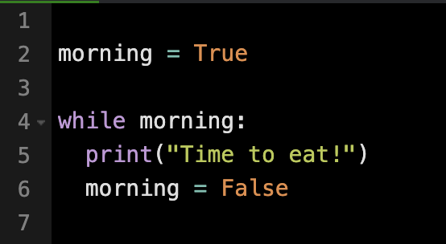
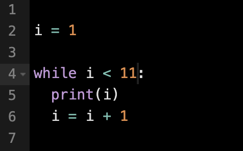

A while loop will continue executing a block of code as long as the condition evaluates to True.
The condition of a while loop is always checked first before the block of code runs. If the condition is not met initially, then the code block will never run.
Basic structure of a while loop:
while condition:
# Code inside
A loop that will run one time:

A loop that will run 10 times:

Important Keywords
The break keyword in a loop terminates the loop immediately, no matter which iteration the loop is on. After the break is executed, the program continues with the code that follows the loop.
The continue keyword is used within a loop to skip the remaining code in the current iteration and move on to the next iteration of the loop.
The pass keyword serves as a placeholder, allowing empty loops, functions, or classes to be included in the code without causing an error. It is often used when planning future implementations.